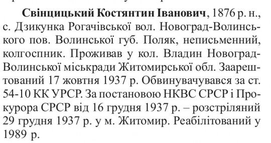
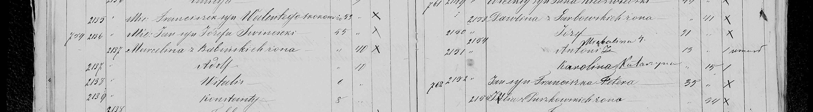
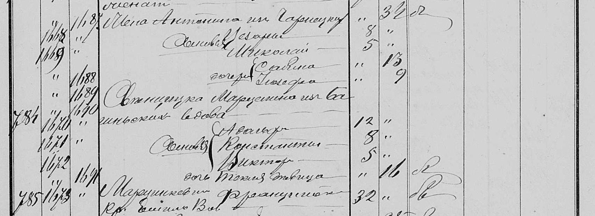
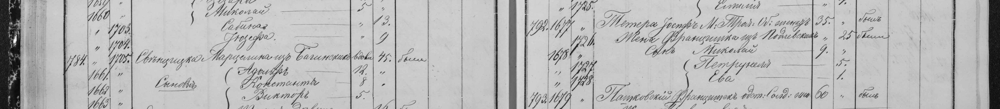
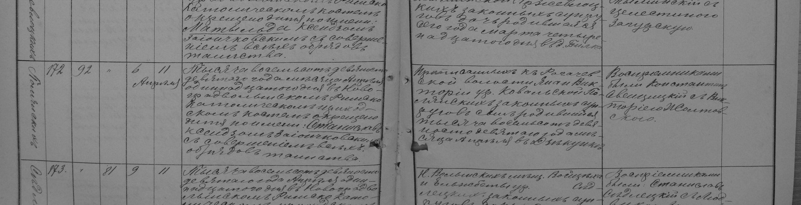
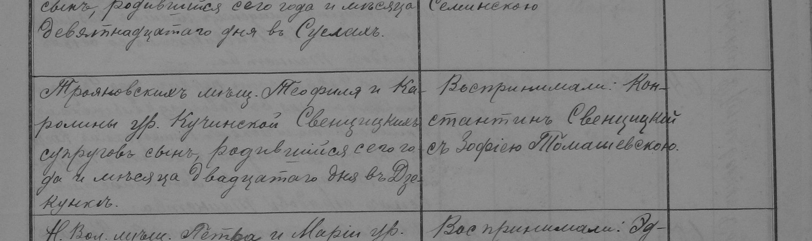
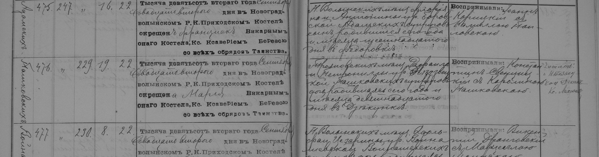
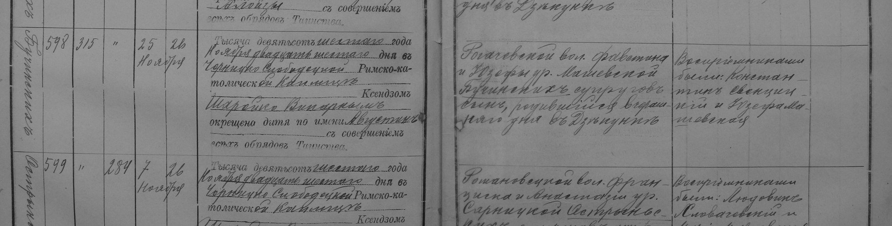
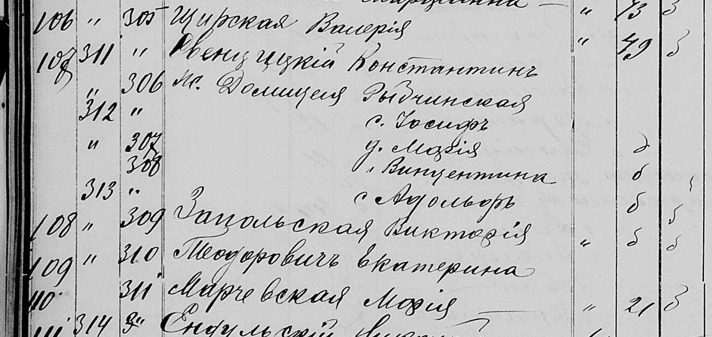
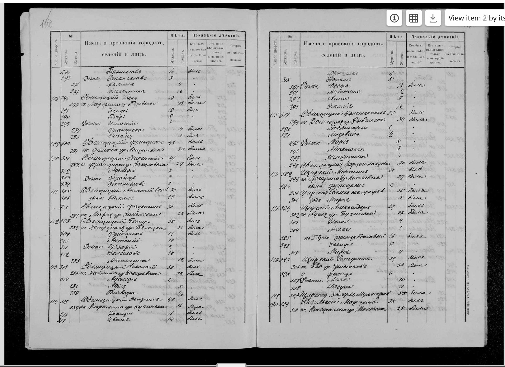

Родина¶
Бодько Свинцицкий† 1941 приватна особа приватна особа приватна особа приватна особа приватна особа приватна особа приватна особа
Гіпотези¶
Константин (5 років) у сповідному розписі 1883, двір 363, син Віталія Івановича Ковальського й Юстини з Свінціцьких (ЦДІАК 1045-2-701, скан 0408) — може бути нашим Костянтином (, син Яна й...Закрита · H0005 Марцеліна з Багинських (, дружина Яна, вдова, двір 115 Дзикунки) старша, ніж записано в каноні: можливо, народилася ≈1822, а не 1842, тобто на 20 років ранішеЗакрита · H0018 Подружжя 1899–1900 з метрик 1045-2-699 — Антон і Єлена з Машновських (Рогачівка, син Леопольд), Цезарій і Марія з Миколаєвських (Гута Середня, син Олександр), Яків і Броніслава (син Мориц), Йосиф...Відкрита — шукаємо · H0035
Життя¶
-
1876
Народження · с. Дзикунка12

-
бл. 1884
Місце проживання · Кука-Гута3 · гіпотеза
Кука-Гута, сповідний розпис 1883–84: двір 759, Konstanty 8 (≈1876 р.н.), син Jana Świniecki і Marceliny z Babinskich

-
бл. 1885
Місце проживання · Кука-Гута45 · гіпотеза
Кука-Гута, сповідний розпис 1884–1885, двір 784; 8 років, з матір'ю-вдовою Марцеліною


-
11 квітня 1899
Подія · с. Дзикунка6 · гіпотеза
хрещений батько (воспріємник) при хрещенні Станіслава, сина Яна й Вікторії з Ковальських, нар. в Дзикунці

-
28 січня 1901
Подія · Новоград-Волынский7
хрещений батько (воспріємник) при хрещенні Франциска, сина Теофіля Теофіль Свінціцький і Каролини з Кучинських Каролина Свінціцька з Кучинських Свінціцьких, нар. 20.01.1901 в Дзикунці; хрещена мати Зофія Томашевська

-
22 вересня 1902
Подія · с. Дзикунка7 · гіпотеза
хрещений батько (воспріємник) при хрещенні Марії, дочки Рафаїла й Петроніли з Незвецьких Пашковських, нар. 19.IX.1902 в Дзикунці

- між 1906 – 1908 Місце проживання · с. Дзикунка8 Дзикунка, двір 103, сповідний розпис 1900–1908 (≈1908): Константин, голова двору, вік читається 29 (Дяк 22; за каноном ≈30); дружина Доміцеля з Рибчинських, дочки Марія й Вікентіна (кві. 1908), мати Марцеліна, брат Адольф
-
26 листопада 1906
Подія · с. Дзикунка9 · гіпотеза
хрещений батько (воспріємник) при хрещенні Августина, сина Фавстина й Юзефи з Машевських Бучинських, нар. 25.XI.1906 в Дзикунці

-
1907
Місце проживання · с. Дзикунка10
Дзикунка, двір 108, сповідний розпис 1907; дружина Доміцеля Рибчинська; діти Іосиф, Марія, Винцентина; «с. Адольфъ» у цьому ж дворі — імовірно брат Костянтина Адольф Свинцицкий, а не син (розпис ≈1908 називає його «бр. Адольфъ»; рішення дослідника 2026-11-16)

-
1912
Місце проживання · с. Дзикунка11
двір 115, з дружиною Доміцелею, дітьми й матір'ю-вдовою Марцеліною

- 1937 Місце проживання · Владин2 кол. Владин Новоград-Волинської міськради; колгоспник; поляк, неписьменний
- 17 жовтня 1937 Подія2 заарештований; обвинувачувався за ст. 54-10 КК УРСР
- 29 грудня 1937 Смерть · Житомир12 розстріляний (постанова НКВС СРСР і Прокурора СРСР від 16.12.1937); реабілітований 1989
- без дати Шлюб1 · гіпотеза ⚭ Доміцеля Рибчинська


Імена в джерелах¶
- Константин Свинцицкий ru
- Костянтин Іванович Свінцицький uk
Документи¶


Медіа¶
- «Реабілітовані історією. Житомирська обл.», кн. 6, с. 236 — Свінцицький Костянтин Іванович — документ у сторі доказів
a2520c84da8c… - Сповідний розпис 1912, ЦДІАК 1045-2-933, FS 004810905 кадр 14 — двір 115 (Константин Свинцицкий) — документ у сторі доказів
6a51eff65b9b… - ДАЖО 178-3-199, скани 1465–1466, №172 — Константин Свенцицкий, воспріємник 1899 — документ у сторі доказів
f3cd77e3cdcb… - ДАЖО 178-3-200, скани 0663–0664, №476 — Константин Свенцицкий, воспріємник 1902 — документ у сторі доказів
a9a236c8b03f… - ДАЖО 178-3-202, скани 0205–0206, №598 — Константин Свенцицкий, воспріємник 1906 — документ у сторі доказів
8805216d0427… - Сповідний розпис 1884–1885, ЦДІАК 1045-2-703, скан 0906 (ліва стор.) — Кука-Гута, двір 784, Марцеліна Свинцицкая з Бабинських, вдова — документ у сторі доказів
d60649abebb2… - ЦДІАК 1045-2-927, скан 0195 — двір 108, Свенцицкій Константин, ж. Домицея Рыбчинская, 1907 — документ у сторі доказів
c3f3d1cf2263… - ЦДІАК 1045-2-924, скан 0147 — Дзикунка, двір 103: Константин з Доміцелею з Рибчинських, 1906–1908 — документ у сторі доказів
ea59fc4221c0… - ЦДІАК 1045-2-924, скан 0147 — Дзикунка, двір 103: мати Марцеліна з Багинських, брат Адольф, 1906–1908 — документ у сторі доказів
1fac7367697d… - Сповідний розпис ЦДІАК 1045-2-702, скан 0643 — Кука-Гута, двір 759, Jan syn Józefa з Marcelina z Babinskich, 1883–84 — документ у сторі доказів
c4b5443d3325…
Нотатки¶
Нотатки не публікуються у відкритій версії: у них ідеться про живих родичів.
-
GEDCOM-експорт дерева (231bk4_072579c6a24z0a37jbv82y_A.ged) ↩↩↩
-
Сповідний розпис римо-католиків Новоград-Волинського костелу на польській мові за 1883 і 1884 рр. («Spis spowiadających się parafian Zwiahelskiego kościoła za 1883 i 1884 Rok») ↩
-
Сповідні розписи римо-католиків Новоград-Волинського костела за 1884–1885 рр. ↩
-
Сповідні розписи (Новоград-Волинський повіт), 1884 р.; плівка FamilySearch 113077407, «Церковні документи 1722–1960» ↩
-
Метричні книги Новоград-Волинського римо-католицького костелу Волинської губернії, 1893–1900 (народження) ↩
-
Метричні книги Новоград-Волинського римо-католицького костелу Волинської губернії, 1900–1903 (народження; містить і шлюби й смерті) ↩↩
-
Исповедная роспись римо-католиков Новоград-Волынского деканата, 1900–1908 ↩
-
Метричні книги Новоград-Волинського римо-католицького костелу Волинської губернії, 1906–1907 (народження; містить і смерті) ↩
-
Сповідний розпис римо-католиків (Черницька Слобідка, Новоград-Волинський пов.), 1912 ↩